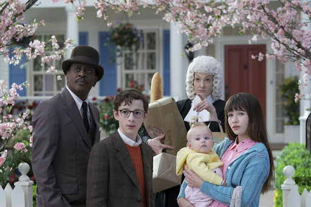
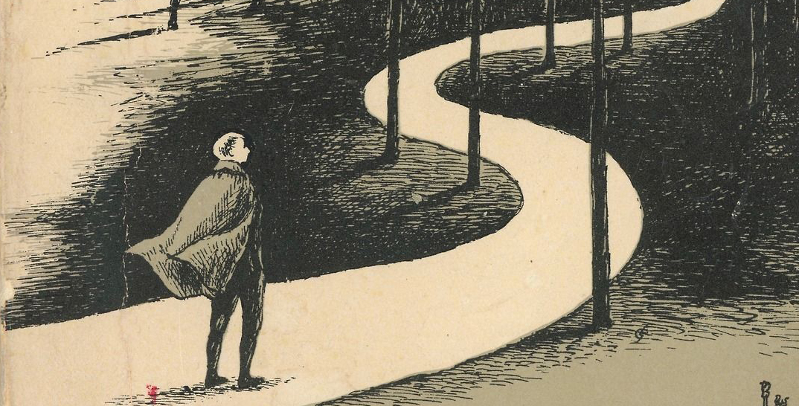

1. Si bien es de conocimiento público, puede que haya uno que otro despistado que necesita saber lo siguiente: Lemony Snicket no es un nombre real. En realidad, el autor de A Series of Unfortunate Events es el estadounidense Daniel Handler (1970), quien originalmente no quería escribir libros para niños. De hecho, la primera vez que un editor de HarperCollins se le acercó en 1997 en busca de autores nuevos para niños, Handler rechazó su propuesta de plano, aunque aceptó la aventura cuando fue desafiado a escribir el libro que le hubiese gustado haber leído cuando tenía 10 años.
2. La serie de 13 libros ha vendido más de 65 millones de copias a nivel mundial y ha sido traducida a más de 40 idiomas, incluidos el finlandés, indonesio, japonés, griego y checo. Asimismo, en su momento de mayor popularidad, la saga alcanzó siete de los diez primeros lugares del ranking del New York Times de los libros para niños más vendidos. Los 13 títulos son los siguientes:
3. La mala suerte del número 13 juega un papel clave en A Series of Unfortunate Events. La saga no solo consta de 13 libros: su último título fue lanzado el viernes 13 de octubre de 2006 y la versión de Netflix, el viernes 13 de enero de 2017.
4. La serie tiene algunos spin-offs que exploran este universo aún más a fondo como The Beatrice Letters y Lemony Snicket: The Unauthorised Autobiography, donde pueden descubrirse mayores detalles de la VFD (Volunteer Fire Department), el Cisma y sobre el mismo Snicket. Es más, All The Wrong Questions es una nueva serie que sigue la infancia de Lemony Snicket como aprendiz de la VFD.
5. Daniel Handler se inspiró en las obras del escritor e ilustrador Edward Gorey para crear A Series of Unfortunate Events. Incluso cuando empezó la serie escribió una nota donde pedía perdón por todo lo que pudo haberle robado a su colega.
6. Para Handler, el actor ideal para el conde Olaf hubiese sido el James Mason de los años 40.
7. Muchos de los nombres de los personajes y lugares de la serie son referencias literarias. Por ejemplo, Esmé Gigi Genevieve Squalor (Esmé Gigi Geniveve Sordidez) fue nombrada en honor a la historia de J. D. Salinger, For Esmé, With Love and Squalor. Además, su esposo, Jarome, comparte su nombre con Salinger.
8. En similar línea, varias de las supuestas divagaciones de Sunny en realidad son referencias a la cultura pop. Por ejemplo, cuando en el décimo libro, The Slippery Slope, Snicket traduce un “busheney” de la niña como “usted es un hombre malo que no se preocupa en absoluto por otras personas”, está haciendo referencia a George W. Bush y Dick Cheney.
9. A Series of Unfortunate Events no incluye muchas descripciones físicas de Violet porque Handler considera que las niñas se preocupan muy precozmente por sus propios detalles físicos, así que prefirió solo identificarla con la cinta de cabello que usa cada vez que inventa algo.
10. Los libros incluyen varias menciones a la ópera porque los padres de Handler se conocieron justamente en una función de ópera y desde niño lo acostumbraron a estos recitales.